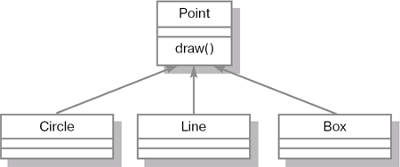

| Программирование на Java | |
| Лекция #2: Основы объектно-ориентированного программирования | |
| Страницы: « | 1 | 2 | 3 | 4 | 5 | вопросы | » | | HTML для печати |
| Если Вы заметили ошибку на этой странице - сообщите нам. | |
КлассыВсе монеты из предыдущего примера принадлежат одному и тому же классу объектов (именно с этим связана их одинаковость). Номинальная стоимость монеты, металл, из которого она изготовлена, форма - это атрибуты класса. Совокупность атрибутов и их значений характеризует объект. Наряду с термином "атрибут" часто используют термины "свойство" и "поле", которые в объектно-ориентированном программировании являются синонимами. Все объекты одного и того же класса описываются одинаковыми наборами атрибутов. Однако объединение объектов в классы определяется не наборами атрибутов, а семантикой. Так, например, объекты "конюшня" и "лошадь" могут иметь одинаковые атрибуты: цена и возраст. При этом они могут относиться к одному классу, если рассматриваются в задаче просто как товар, либо к разным классам, если в рамках поставленной задачи будут использоваться по-разному, т.е. над ними будут совершаться различные действия. Объединение объектов в классы позволяет рассмотреть задачу в более общей постановке. Класс имеет имя (например, "лошадь"), которое относится ко всем объектам этого класса. Кроме того, в классе вводятся имена атрибутов, которые определены для объектов. В этом смысле описание класса аналогично описанию типа структуры или записи (record), широко применяющихся в процедурном программировании; при этом каждый объект имеет тот же смысл, что и экземпляр структуры (переменная или константа соответствующего типа). Формально класс - это шаблон поведения объектов определенного типа с заданными параметрами, определяющими состояние. Все экземпляры одного класса (объекты, порожденные от одного класса) имеют один и тот же набор свойств и общее поведение, то есть одинаково реагируют на одинаковые сообщения. В соответствии с UML (Unified Modeling Language - унифицированный язык моделирования), класс имеет следующее графическое представление. Класс изображается в виде прямоугольника, состоящего из трех частей. В верхней части помещается название класса, в средней - свойства объектов класса, в нижней - действия, которые можно выполнять с объектами данного класса (методы). Каждый класс также может иметь специальные методы, которые автоматически вызываются при создании и уничтожении объектов этого класса:
Обычно конструктор и деструктор имеют специальный синтаксис, который может отличаться от синтаксиса, используемого для написания обычных методов класса. ИнкапсуляцияИнкапсуляция (encapsulation) - это сокрытие реализации класса и отделение его внутреннего представления от внешнего (интерфейса). При использовании объектно-ориентированного подхода не принято применять прямой доступ к свойствам какого-либо класса из методов других классов. Для доступа к свойствам класса принято задействовать специальные методы этого класса для получения и изменения его свойств. Внутри объекта данные и методы могут обладать различной степенью открытости (или доступности). Степени доступности, принятые в языке Java, подробно будут рассмотрены лекции 6. Они позволяют более тонко управлять свойством инкапсуляции. Открытые члены класса составляют внешний интерфейс объекта. Это та функциональность, которая доступна другим классам. Закрытыми обычно объявляются все свойства класса, а также вспомогательные методы, которые являются деталями реализации и от которых не должны зависеть другие части системы. Благодаря сокрытию реализации за внешним интерфейсом класса можно менять внутреннюю логику отдельного класса, не меняя код остальных компонентов системы. Это свойство называется модульность. Обеспечение доступа к свойствам класса только через его методы также дает ряд преимуществ. Во-первых, так гораздо проще контролировать корректные значения полей, ведь прямое обращение к свойствам отслеживать невозможно, а значит, им могут присвоить некорректные значения. Во-вторых, не составит труда изменить способ хранения данных. Если информация станет храниться не в памяти, а в долговременном хранилище, таком как файловая система или база данных, потребуется изменить лишь ряд методов одного класса, а не вводить эту функциональность во все части системы. Наконец, программный код, написанный с использованием данного принципа, легче отлаживать. Для того, чтобы узнать, кто и когда изменил свойство интересующего нас объекта, достаточно добавить вывод отладочной информации в тот метод объекта, посредством которого осуществляется доступ к свойству этого объекта. При использовании прямого доступа к свойствам объектов программисту пришлось бы добавлять вывод отладочной информации во все участки кода, где используется интересующий нас объект. НаследованиеНаследование (inheritance) - это отношение между классами, при котором класс использует структуру или поведение другого класса (одиночное наследование), или других (множественное наследование) классов. Наследование вводит иерархию "общее/частное", в которой подкласс наследует от одного или нескольких более общих суперклассов. Подклассы обычно дополняют или переопределяют унаследованную структуру и поведение. В качестве примера можно рассмотреть задачу, в которой необходимо реализовать классы "Легковой автомобиль" и "Грузовой автомобиль". Очевидно, эти два класса имеют общую функциональность. Так, оба они имеют 4 колеса, двигатель, могут перемещаться и т.д. Всеми этими свойствами обладает любой автомобиль, независимо от того, грузовой он или легковой, 5- или 12-местный. Разумно вынести эти общие свойства и функциональность в отдельный класс, например, "Автомобиль" и наследовать от него классы "Легковой автомобиль" и "Грузовой автомобиль", чтобы избежать повторного написания одного и того же кода в разных классах. Отношение обобщения обозначается сплошной линией с треугольной стрелкой на конце. Стрелка указывает на более общий класс (класс-предок или суперкласс), а ее отсутствие - на более специальный класс (класс-потомок или подкласс). Использование наследования способствует уменьшению количества кода, созданного для описания схожих сущностей, а также способствует написанию более эффективного и гибкого кода. В рассмотренном примере применено одиночное наследование. Некоторый класс также может наследовать свойства и поведение сразу нескольких классов. Наиболее популярным примером применения множественного наследования является проектирование системы учета товаров в зоомагазине. Все животные в зоомагазине являются наследниками класса "Животное", а также наследниками класса "Товар". Т.е. все они имеют возраст, нуждаются в пище и воде и в то же время имеют цену и могут быть проданы. Множественное наследование на диаграмме изображается точно так же, как одиночное, за исключением того, что линии наследования соединяют класс-потомок сразу с несколькими суперклассами. Не все объектно-ориентированные языки программирования содержат языковые конструкции для описания множественного наследования. В языке Java множественное наследование имеет ограниченную поддержку через интерфейсы и будет рассмотрено в лекции 8. ПолиморфизмПолиморфизм является одним из фундаментальных понятий в объектно-ориентированном программировании наряду с наследованием и инкапсуляцией. Слово "полиморфизм" греческого происхождения и означает "имеющий много форм". Чтобы понять, что оно означает применительно к объектно-ориентированному программированию, рассмотрим пример. Предположим, мы хотим создать векторный графический редактор, в котором нам нужно описать в виде классов набор графических примитивов - Point, Line, Circle, Box и т.д. У каждого из этих классов определим метод draw для отображения соответствующего примитива на экране. Очевидно, придется написать код, который при необходимости отобразить рисунок будет последовательно перебирать все примитивы, на момент отрисовки находящиеся на экране, и вызывать метод draw у каждого из них. Человек, незнакомый с полиморфизмом, вероятнее всего, создаст несколько массивов (отдельный массив для каждого типа примитивов) и напишет код, который последовательно переберет элементы из каждого массива и вызовет у каждого элемента метод draw. В результате получится примерно следующий код:
…
//создание пустого массива, который может
// содержать объекты Point с максимальным
// объемом 1000
Point[] p = new Point[1000];
Line[] l = new Line[1000];
Circle[] c = new Circle[1000];
Box[] b = new Box[1000];
…
// предположим, в этом месте происходит
// заполнение всех массивов соответствующими
// объектами
…
for(int i = 0; i < p.length;i++) {
//цикл с перебором всех ячеек массива.
//вызов метода draw() в случае,
// если ячейка не пустая.
if(p[i]!=null) p.draw();
}
for(int i = 0; i < l.length;i++) {
if(l[i]!=null) l.draw();
}
for(int i = 0; i < c.length;i++) {
if(c[i]!=null) c.draw();
}
for(int i = 0; i < b.length;i++) {
if(b[i]!=null) b.draw();
}
…
Недостатком написанного выше кода является дублирование практически идентичного кода для отображения каждого типа примитивов. Также неудобно то, что при дальнейшей модернизации нашего графического редактора и добавлении возможности рисовать новые типы графических примитивов, например Text, Star и т.д., при таком подходе придется менять существующий код и добавлять в него определения новых массивов, а также обработку содержащихся в них элементов. Используя полиморфизм, мы можем значительно упростить реализацию подобной функциональности. Прежде всего, создадим общий родительский класс для всех наших классов. Пусть таким классом будет Point. В результате получим иерархию классов, которая изображена на рисунке 2.3. У каждого из дочерних классов метод draw переопределен таким образом, чтобы отображать экземпляры каждого класса соответствующим образом. Для описанной выше иерархии классов, используя полиморфизм, можно написать следующий код:
…
Point p[] = new Point[1000];
p[0] = new Circle();
p[1] = new Point();
p[2] = new Box();
p[3] = new Line();
…
for(int i = 0; i < p.length;i++) {
if(p[i]!=null) p.draw();
}
…
В описанном выше примере массив p[] может содержать любые объекты, порожденные от наследников класса Point. При вызове какого-либо метода у любого из элементов этого массива будет выполнен метод того объекта, который содержится в ячейке массива. Например, если в ячейке p[0] находится объект Circle, то при вызове метода draw следующим образом: p[0].draw() нарисуется круг, а не точка. В заключение приведем формальное определение полиморфизма. Полиморфизм (polymorphism) - положение теории типов, согласно которому имена (например, переменных) могут обозначать объекты разных (но имеющих общего родителя) классов. Следовательно, любой объект, обозначаемый полиморфным именем, может по-своему реагировать на некий общий набор операций [2]. В процедурном программировании тоже существует понятие полиморфизма, которое отличается от рассмотренного механизма в ООП. Процедурный полиморфизм предполагает возможность создания нескольких процедур или функций с одним и тем же именем, но разным количеством или различными типами передаваемых параметров. Такие одноименные функции называются перегруженными, а само явление - перегрузкой (overloading). Перегрузка функций существует и в ООП и называется перегрузкой методов.  Примером использования перегрузки методов в языке Java может служить класс PrintWriter, который применяется, в частности, для вывода сообщений на консоль. Этот класс имеет множество методов println, которые различаются типами и/или количеством входных параметров. Вот лишь несколько из них: void println() // переход на новую строку void println(boolean x) // выводит значение булевской // переменной (true или false) void println(String x) // выводит строку - значение // текстового параметра. Определенные сложности возникают при вызове перегруженных методов. В Java существуют специальные правила, которые позволяют решать эту проблему. Они будут рассмотрены в соответствующей лекции. |
|
| Перейти к следующей странице » | |
| Если Вы заметили ошибку на этой странице - сообщите нам. | |
| Страницы: « | 1 | 2 | 3 | 4 | 5 | вопросы | » | | HTML для печати |
| Ключевые слова | |||
| UML, деструктор, инкапсуляция, класс, класс-потомок, класс-предок, конструктор, модульность, наследование, объект, объектно-ориентированное программирование, ООП, перегруженная функция, перегрузка, поведение, подкласс, полиморфизм, состояние, суперкласс все ключевые слова » |
|||
| Информация о лекции | |||
| В этой лекции излагается основная концепция объектно-ориентированного подхода (ООП) к проектированию программного обеспечения. Поскольку в Java почти все типы (за исключением восьми простейших) являются объектными, владение ООП становится необходимым условием для успешного применения языка. Лекция имеет вводный, обзорный характер. Для более детального изучения предлагается список дополнительной литературы и Internet-ресурсов. | |||
| Учебники к курсу | |||
|
|||
|
|||
| все книги по курсу » |